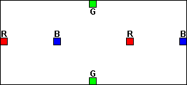
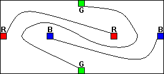

Er moeten drie lijnen getrokken worden, van R naar R, van G naar G en van B naar B. Ze hoeven niet recht te zijn, maar de lijnen moeten wel binnen de vierhoek liggen. De gekleurde vakjes kunnen wiskundig als punten opgevat worden (maw: de lijnen tussen de blokjes gaan van de rand van het ene blokje naar de rand van het andere blokje, en geen enkele lijn mag door het blokje), en alles speelt zich af in het platte vlak (2D, that is).  Nu denk je, dat is niet zo moeilijk, maar de lijnen mogen elkaar niet kruisen. TIP: Kun je geen gif plaatjes bewerken? Click met je rechter muistoets op het plaatje en kies "Bewaar als..." en verander "GIF (.gif)" naar "Bitmap (.bmp)". Nu kun je naar hartelust met MSPaint tekenen (dit alles voor de windows adepten onder ons).  Niet wachten?Klik
hier voor de oplossing.
Got lost: go back home |
|||||||||
© 2000 by Doeke Zanstra |